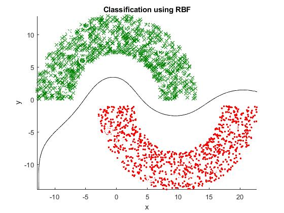

Machine Learning: Theory and Implementation
I studied and implemented classification methods including perceptrons, radial basis function networks, and support vector machines using Python and MATLAB. The project connects their mathematical foundations with experiments and visualizations of learned decision boundaries.
Visualizing a Decision Boundary

These experiments illustrate how the choice of representation affects classification. A single linear threshold perceptron requires linearly separable data for exact classification; problems such as XOR require a richer representation or model.